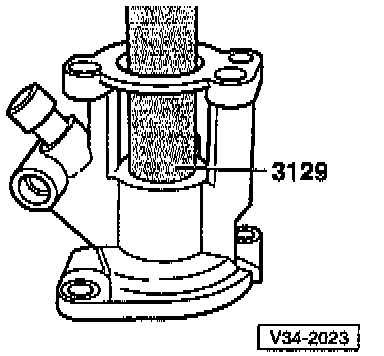

Selector Shaft: Service and Repair

COMPONENT NOTES AND INFORMATION
1 Selector shaft
2 Stop ring
3 Ball sleeve
- Removing, refer to Fig. 1
- Installing, refer to Fig. 2
4 Oil seal
- Pry out with screwdriver
- Installing, refer to Fig. 3
5 Cover
6 Sleeve
- Tab faces Back-Up Light Switch
- Lightly lubricate tab with MoS2 grease
7 Self-locking nut
- Tighten to: 25 Nm (18 ft lb)
- Always replace
8 Housing With Back-Up Light Switch
9 Bolt
10 Cap
- For transmission breather
11 Sleeve
- Drive in to stop
12 Transmission gearshift lever
- Install so that master spline aligns with selector shaft
- Can be replaced with selector mechanism installed. -a-.
- Installation position, refer to Selector Lever/Relay Lever Installation Position. Service and Repair
- Replacing, refer to Fig. 4
13 Relay lever
- Installation position, refer to Selector Lever/Relay Lever Installation Position. Service and Repair
14 Nut
- Tighten to: 15 Nm (11 ft lb)
15 Actuating arm
- With shaft for mounting relay lever
- Installation position, refer to Selector Lever/Relay Lever Installation Position. Service and Repair
16 Bolt
- Press into actuating arm
17 O-rings
- Pull onto actuating arm shaft
18 Spacer
- Press into relay lever
19 Locking bolt
- Tighten to: 40 Nm (30 ft lb)
20 Cover
PROCEDURES

Fig. 1 Removing ball sleeve from selector mechanism cover
NOTE: Before removing ball bearing sleeve, destroy plastic cage and remove balls.
A - Internal puller, 18.5 to 23.5 mm e.g. US 1088 (Kukko 21/3)

Fig. 2 Installing ball sleeve in selector mechanism cover

Fig. 3 Installing oil seal
- Press in up to stop.

Fig. 4 Replacing transmission gearshift lever
- Press selector shaft (arrow -1-) down.
- Swivel gearshift lever (direction of arrow -2-) and pull outward (direction of arrow -3-), while guiding in area of balance weight bracket (arrow -4-).